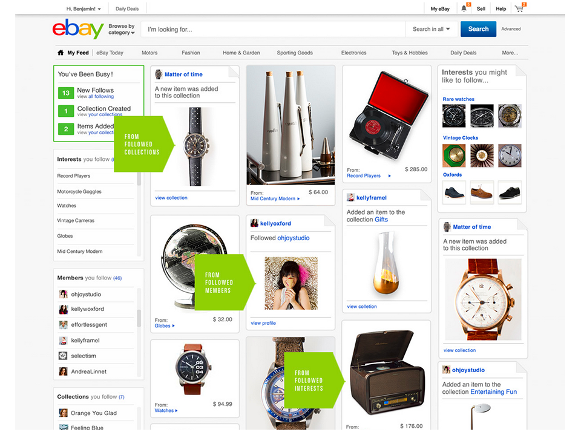

Exposing Services Painlessly with the
CommerceOS
External Proxy
eBay 3.0
eBay 3.0
A cornucopia of new services, including:
- Interest Service
- Profile Service
- Follow Service
- Collection Service
- Item Service (lens)
- ...many others
Where's the Pain?
Lots of services to externalize,
lots of redundant codeNot a lot of time
- AuthN / AuthZ (IAF)
- JSONP
- Identity Translation
- Public / Private Filtering
Authorization / Authentication
IAF (WAT?)
Proxy AuthN/AuthZ
(URL Madlibs)
If your service looks like
http://followservice.vip/feed/users/123456/follows
The proxy configuration looks like
http://followservice.vip/feed/users/{user}/follows
Proxy AuthN/AuthZ
http://www.proxy.stratus.ebay.com/proxy/
?url = http://followservice.vip/feed/users/{user}/follows
&data = {"user":{"id":"123456","type":"ACCOUNT_ID"}}
&method = GET (or POST, DELETE, etc)
&_csrf = CSRFTOKEN
Response
{
okay: true,
data: {
follows: [{
objectId: 1,
objectType: "INTEREST",
time: "2013-07-29T10:00:06-0700",
visibility: "PRIVATE"
}]
}
}
JSONP
JSONP
http://www.proxy.stratus.ebay.com/proxy/
?url = http://followservice.vip/feed/users/{user}/follows
&method = GET (or POST, DELETE, etc)
&data = {"user":{"id":"123456","type":"ACCOUNT_ID"}}
&_csrf = CSRFTOKEN
&callback = mycallback
Response
mycallback({
okay: true,
data: {
follows: [{
objectId: 1,
objectType: "INTEREST",
time: "2013-07-29T10:00:06-0700",
visibility: "PRIVATE"
}]
}
})
Identity Translation

AccountId <-> Username
Identity Translation
http://www.proxy.stratus.ebay.com/proxy/
?url = http://followservice.vip/feed/users/{user}/follows
&method = GET (or POST, DELETE, etc)
&_csrf = CSRFTOKEN
&data = {"user":{"id":"airdaddy44",
"type":"USERNAME",
"convert_to":"ACCOUNT_ID"}}
Response
{
okay: true,
data: {
follows: [{
objectId: 1,
objectType: "INTEREST",
time: "2013-07-29T10:00:06-0700",
visibility: "PRIVATE"
}]
}
}
Public / Private Filtering
Public / Private Filtering
http://www.proxy.stratus.ebay.com/proxy/
?url = http://followservice.vip/feed/users/{user}/follows
&method = GET (or POST, DELETE, etc)
&_csrf = CSRFTOKEN
&data = {"user":{"id":"airdaddy44",
"type":"USERNAME",
"convert_to":"ACCOUNT_ID"}}
Response (when not logged in as airdaddy44)
{
okay: true,
data: {
follows: []
}
}
CubeJS
Node.js, running on Raptor, hosted on Stratus.
eBay's first officially supported language other than Java.
What's Next?

What We've Learned
- Duplicate code is bad
- Rapid iteration is good
- CubeJS is awesome